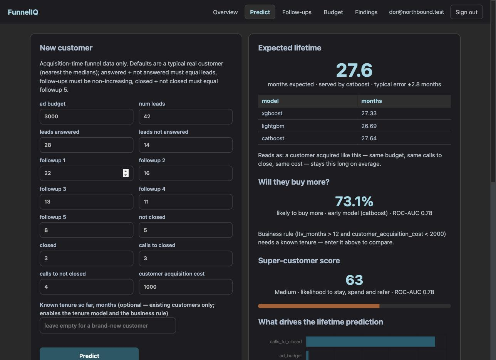
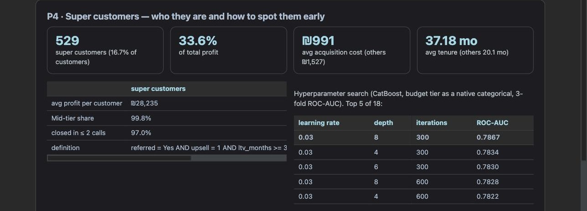

M5: מי יהפוך ללקוח-על?
חבילה 4 של הברייף: CatBoost על referred עם רמת התקציב כקטגוריה נייטיבית (בלי one-hot), חיפוש היפר-פרמטרים על 18 קונפיגורציות, ציון 0–100 חי באתר, ופרופיל של לקוחות-העל האמיתיים: כמה הם, איזה נתח מהרווח הם מביאים, כמה עלה להשיג אותם, ואיך לזהות אותם ביום החתימה.
בשפה פשוטה
"לקוח-על" הוא לקוח שנשאר הרבה זמן, קונה עוד, וגם מפנה חברים. אימנו מודל שמנבא את החלק הקשה ביותר לניחוש, ההפניה, והפכנו את ההסתברות שלו לציון 0–100 שמופיע באתר לכל לקוח חדש. במקביל הסתכלנו על לקוחות-העל האמיתיים בדאטה: אחד מכל שישה לקוחות מביא שליש מהרווח, ועלה פחות להשיג אותו, לא יותר. והכי חשוב למייסד: כמעט כולם הגיעו מקמפיינים ברמת תקציב בינונית ונסגרו בשיחה אחת או שתיים. אפשר לזהות אותם ביום החתימה, בלי לחכות.
חיפוש היפר-פרמטרים (18 קונפיגורציות, 3-fold, לקוחות בלבד n = 3,163)
| learning rate | depth | iterations | ROC-AUC (3-fold) | F1 |
|---|---|---|---|---|
| 0.03 | 8 | 300 | 0.7867 | 0.7326 |
| 0.03 | 4 | 300 | 0.7834 | 0.7365 |
| 0.03 | 6 | 300 | 0.7830 | 0.7371 |
| 0.03 | 8 | 600 | 0.7828 | 0.7227 |
| 0.03 | 4 | 600 | 0.7822 | 0.7349 |
| … | ||||
| 0.1 | 8 | 1000 | 0.7633 | 0.6762 |
הדפוס בטבלה המלאה עקבי: יותר איטרציות ו-learning rate גבוה יותר מזיקים. עם ~3,000 שורות המודל מתאים-יתר מהר, והחיפוש בעצם בוחר כמה מעט להתאים. הקונפיגורציה הטובה ביותר (lr 0.03, depth 8, 300 איטרציות) נמדדה מחדש ב-5-fold ואומנה מחדש על כל השורות.
המודל המוגש מול ה-baseline (stratified 5-fold)
| מודל | דיוק | precision | recall | F1 | ROC-AUC |
|---|---|---|---|---|---|
| baseline: המחלקה הרוב ("לא הפנה") | 57.3% | — | 0 | 0 | 0.500 |
| CatBoost, tier קטגורי (מוגש) | 75.1% | 0.676 | 0.802 | 0.734 | 0.784 |
חשיבות פיצ'רים: calls_to_closed 0.30, calls_to_not_closed 0.09, budget_tier 0.08, answer_rate 0.07, conversion_rate 0.06. גם כאן מספר השיחות עד סגירה מוביל, אבל רחוק מהשליטה המוחלטת שראינו בוותק: ההפניה היא שילוב.
הציון 0–100
הציון הוא ההסתברות כפול 100, מעוגל. על 3,163 הלקוחות באימון: ממוצע 43, סטיית תקן 28, טווח 3–90. שלוש רצועות:
פרופיל לקוחות-העל
הגדרה: referred = Yes וגם upsell = 1 וגם ותק של 34 חודשים ומעלה (אחוזון 75 של הלקוחות). זה פרופיל של מי שכבר הוכיח את עצמו, מחושב חי משורות Supabase באותה פונקציה שרצה באימון.
| לקוחות-על | כל השאר | |
|---|---|---|
| מספר | 529 (16.7%) | 2,634 |
| נתח מכלל הרווח | 33.6% | 66.4% |
| רווח ממוצע ללקוח | ₪28,235 | ₪11,189 |
| עלות רכישה ממוצעת (CAC) | ₪991 | ₪1,527 |
| ותק ממוצע | 37.2 חודשים | 20.1 חודשים |
| נתח Mid tier | 99.8% | 42.2% |
| נסגרו ב-2 שיחות או פחות | 97.0% | 21.3% |
אחד מכל שישה לקוחות מביא שליש מהרווח, ועולה פחות להשגה מהלקוח הממוצע.
שלוש השאלות של הברייף
1. איזה נתח מהרווח הם מביאים?
33.6% מכלל הרווח, מ-16.7% מהלקוחות. פי 2.5 מהרווח הממוצע ללקוח.
2. כמה עלה להשיג אותם?
₪991 בממוצע, מול ₪1,527 לשאר. הם לא "הלקוחות היקרים"; הם הזולים.
3. איך לזהות אותם מוקדם יותר?
הם גלויים ביום החתימה. 99.8% מגיעים מקמפיינים ברמת תקציב Mid (₪2,000–5,000) ו-97% נסגרים תוך שתי שיחות, מול 42% ו-21% אצל כל השאר. הציון מפרמל את זה (וה-API מגיש אותו), אבל הכלל הפשוט "Mid, נסגר ב-1–2 שיחות, CAC סביב ₪1,000" כבר מזהה את הסגמנט.
המלצה למייסד
ביום החתימה: כל לקוח Mid שנסגר בשיחה אחת או שתיים נכנס מיד לתוכנית הפניות ולמסלול שימור. זה הרווח הזול ביותר במשפך. הציון משמש לתעדוף פנייה, לא לפסילה: ROC-AUC 0.78 אומר שהדירוג טוב אבל טעויות ברמת הלקוח הבודד שכיחות (precision 0.68).
D-M5-1 · החיפוש ב-3-fold, המדידה הסופית ב-5-fold
התוכנית הציעה 18 קונפיגורציות × 5 folds ואת 3-fold כחלופה אם החיפוש מתארך. החיפוש רץ ב-3-fold (54 אימונים במקום 90), והקונפיגורציה שנבחרה נמדדה מחדש ב-5-fold כדי שהמספר המדווח יהיה ברמת האמינות של M3–M4. המחיר: ה-AUC של החיפוש (0.7867) והסופי (0.7836) לא זהים והם מדווחים בנפרד. שני המספרים ב-metrics.json (search_splits: 3).
מה חי באתר
POST /api/predict/super-score מחזיר ציון, הסתברות ורצועה, ונרשם ב-prediction_log דרך הטוקן של המשתמש. GET /api/insights/super-customers מחשב את הפרופיל חי משורות Supabase. בלשונית Predict נוסף פס ציון; לשונית Findings מציגה את הפרופיל, את "איך לזהות מוקדם", ואת חמש הקונפיגורציות המובילות בחיפוש.

הדוגמה בצילום: הלקוח הטיפוסי (Mid ₪3,000, 3 שיחות עד סגירה, CAC ₪1,000): ציון 63, רצועת Medium. שלוש החבילות מוצגות זו מעל זו: 27.6 חודשים, 73.1% upsell, ציון 63.

לקח טכני: sklearn.clone() נכשל על CatBoost עם cat_features; ml/evaluate.py::fresh() בונה מודל חדש מ-get_params() לכל fold.
תוצאת השער
- עבר · pytest ירוק (67 בדיקות).
- עבר · ruff נקי.
- עבר · טבלת החיפוש: 18 שורות,
best_paramsהוא ה-argmax של ROC-AUC,super.joblibקיים. - עבר · ציונים על כל 3,500 השורות בטווח 0–100 ולא קבועים (סטיית תקן > 5).
- עבר · פרופיל לקוחות-העל: נתח רווח ב-(0,1) ו-CAC מדווחים.
- עבר · REPORT.md §P4 עונה על שלוש השאלות.
- עבר · חי:
POST /api/predict/super-scoreו-GET /api/insights/super-customersמחזירים 200.
הערה לעתיד (לא חוסמת)
בטבלת הפרופיל בלשונית Findings, העמודה "כל השאר" נחתכת ברוחב מסך רגיל ודורשת גלילה אופקית. מועמד לתיקון קטן ב-M8 יחד עם אזהרת "רחוק מנתוני האימון" שנרשמה אחרי M3.
הבא בתור: M6, פרדוקס המעקבים
חבילה 5: טבלת נשירה לכל שלב במשפך (נענה ← מעקב 1 ← … ← מעקב 5 ← סגירה), התפלגות מספר השיחות בעסקאות שנסגרו, ותשובה של כן/לא לשאלה "האם אחרי השיחה השלישית מבזבזים זמן", עם הסיבה. לשונית Follow-ups באתר.